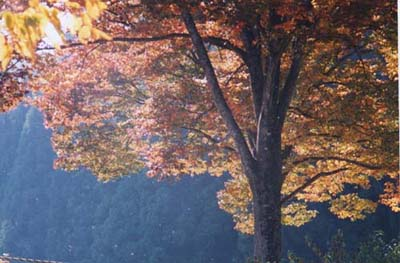

道端のススキの穂が光る、クズの葉も黄色くなり、里山のクヌギ、カシ、桜、フジの葉も色づく。街路樹のケヤキも黄色、赤へそして落葉し始めている。車で４０分ほどの丸森町の不動尊公園へ着いたときは、お昼を過ぎていたが谷川では今を盛りの「いも煮会」が子供連れで賑わっていた。ケヤキの黄色、赤、モミジ、カエデ、カシなどの紅葉した木が茂る谷下の河原で、大きな鍋で里芋、豚肉、蒟蒻、ゴボウなどを煮込んで食べる。山形県は牛肉だという。
この不動尊は紅葉の林に囲まれ、多くのカメラマンが右左から、それぞれの好みで太いレンズを三脚に乗せ構えていた。
不動尊公園の駐車場にある大きなケヤキ、風が吹くと音を立てて乾いた枯れ葉が落ちてくる駐車場の大木。枯れ葉が落ちているが、見にくいのが残念。
宮城県 丸森
